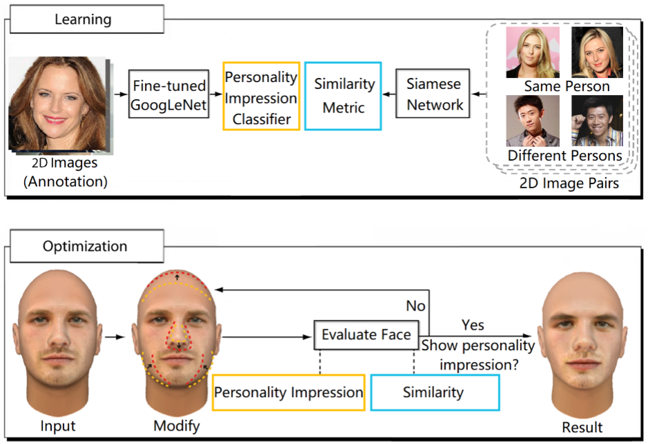

3D Face Synthesis Driven by Personality Impression
Yining Lang1 Wei Liang1 Yujia Wang1 Lap-Fai Yu2
1Beijing Institute of Technology 2George Mason University

Abstract
Synthesizing 3D faces that give certain personality impressions is commonly needed in computer games, animations, and virtual world applications for producing realistic virtual characters.In this paper,we propose a novel approach to synthesize 3D faces based on personality impression for creating virtual characters. Our approach consists of two major steps. In the first step, we train classifiers using deep convolutional neural networks on a dataset of images with personality impression annotations, which are capable of predicting the personality impression of a face.In the second step,given a 3D face and a desired personality impression type as user inputs, our approach optimizes the facial details against the trained classifiers, so as to synthesize a face which gives the desired personality impression. We demonstrate our approach for synthesizing 3D faces giving desired personality impressions on a variety of 3D face models.Perceptual studies show that the perceived personality impressions of the synthesized faces agree with the target personality impressions specified for synthesizing the faces.
Publication
3D Face Synthesis Driven by Personality Impression
Yining Lang,
Wei Liang,
Yujia Wang,
Lap-Fai Yu
Association for the Advancement of Artificial Intelligence 2019 (AAAI 2019)
Paper
, Video
BibTex
@inproceedings{lang2019face,
title=
{3D Face Synthesis Driven by Personality Impression},
author = {Lang, Yining and Liang, Wei and Wang, Yujia and Yu, Lap-Fai},
booktitle = {Proceedings of the AAAI},
year = {2019}
}

- 媒体计算与智能系统实验室
- Media Computing and Intelligent Systems Lab
Beijing Institute of Technology Copyright Address: 5 South Zhongguancun
Street, Haidian District, Beijing Postcode: 100081